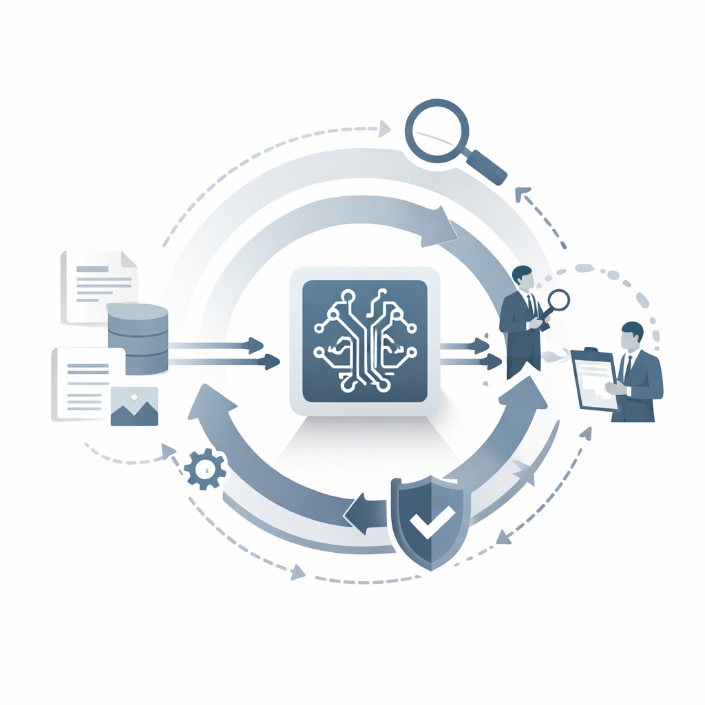

AI Coding Assistants Are Becoming Control-Critical Tools in Operational Industries
January 25, 2026
AI coding assistants and agent-enabled tools are increasingly integrated into enterprise operations, supporting analytics, automation, reporting logic, and customer-facing workflows. What often begins as productivity support for developers or analysts can quickly evolve into logic that directly influences operational decisions, financial outcomes, and customer experience.
In operational industries such as electrical and communications distribution, where organizations manage high transaction volumes, complex supply chains, and tight margins, these tools are no longer peripheral. They are becoming embedded in the systems and processes that internal controls are designed to protect.
As AI-assisted logic becomes embedded in operational systems, its influence on controls and outcomes expands.
What is changing with AI-enabled tools
Traditional automation relies on deterministic logic that executes the same instructions consistently over time. In contrast, many AI-enabled tools rely on machine learning techniques that adapt based on inputs, usage patterns, and evolving data sets. This means the logic influencing decisions is not static.
In distribution environments, AI-assisted logic may support demand forecasting, pricing analysis, transportation routing, inventory replenishment, or customer service responses. As these tools learn and adjust, outcomes can change even when the underlying business intent remains the same.
Industry groups such as the :contentReference[oaicite:0]{index=0} have emphasized the growing role of advanced analytics and automation in managing scale, service levels, and profitability. As AI becomes part of that analytical layer, it introduces new control considerations that were not present in traditional rule-based systems.
Why leadership should care
For executive leadership, the risk is not simply the use of AI, but the pace at which AI-enabled logic can influence operational and financial outcomes without clear visibility. Machine learning models are only as reliable as the data they consume and the controls that govern how they evolve.
In practice, this means that pricing recommendations, fulfillment decisions, or customer communications may change over time based on shifting inputs. Without appropriate oversight, these changes can affect margins, revenue recognition, contractual commitments, and customer trust.
AI agents are also increasingly capable of interacting directly with customers through chat, order assistance, and service workflows. These interactions influence customer experience and brand perception, particularly when responses evolve dynamically rather than following scripted rules.
Why internal audit involvement matters
Internal audit plays a critical role in helping organizations understand how emerging technologies fit within the overall control environment. Professional standards from the :contentReference[oaicite:1]{index=1} require internal audit to evaluate governance, risk management, and internal controls across all significant activities, including those enabled by advanced technology.
This responsibility extends beyond reviewing outputs. Audit must understand how AI-assisted logic is designed, how changes are validated, how segregation of duties is preserved, and how evidence is retained for assurance purposes.
Frameworks such as the :contentReference[oaicite:2]{index=2} emphasize accountability, documentation, and ongoing monitoring. AI-enabled processes challenge traditional interpretations of these principles if control design and testing approaches are not updated.
The case for an AI advisory board
As AI use expands, many organizations are adopting cross-functional AI advisory boards as a best practice. These groups typically include representation from operations, IT, legal, compliance, risk management, and internal audit.
An advisory board provides a forum to establish shared expectations for acceptable use, testing standards, documentation requirements, and ongoing monitoring. Importantly, it positions internal audit as a strategic partner rather than a retrospective reviewer.
For employee-owned organizations that may not be subject to public company reporting requirements, this structure helps align AI adoption with fiduciary responsibility, long-term sustainability, and stewardship of employee value.
Risks when audit is not involved
When internal audit is not involved, organizations may unintentionally allow AI-driven logic to influence downstream financial controls without clear accountability. Changes in model behavior can affect pricing, accruals, inventory valuation, or revenue timing in ways that are difficult to detect after the fact.
Over time, undocumented automation, compressed segregation of duties, and inconsistent testing practices can erode confidence in reported results. Remediation becomes more complex once AI-driven processes are deeply embedded in operations.
Establishing a foundation for responsible adoption
AI coding assistants and agents are becoming integral to operational industries. Recognizing them as control-relevant tools is a necessary step toward responsible adoption.
This post establishes the foundation for future discussions on governance models, audit testing approaches, and tools that support scalable, compliant, and well-controlled AI use across the enterprise.